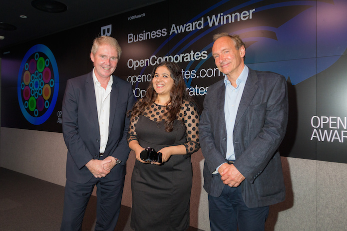
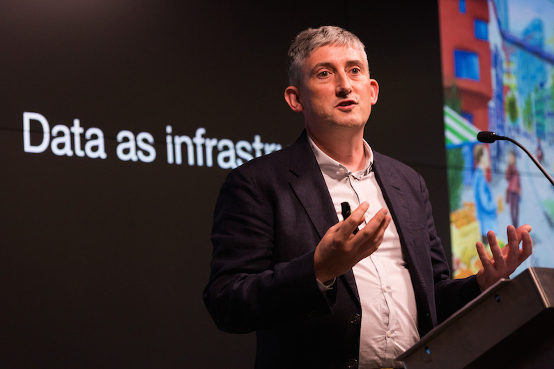

Paving the way for Generation Open: what it will take and who will benefit
Businesses and governments are seeing more evidence of open data building economic value and more efficient public services, ODI founders Sirs Tim Berners-Lee and Nigel Shadbolt told a press conference at the Open Data Awards earlier this month, together with ODI CEO Gavin Starks.
 ODI founders Sirs Nigel Shadbolt (left) and Tim Berners-Lee (right) at the 2015 Open Data Awards, with Hera Hussain from Business Award winner Open Corporates. Photo: CC BY 2.0, by [Paul Clarke for the ODI](https://www.flickr.com/photos/ukodi/sets/72157655306322560 “Paul Clarke for the ODI").
"What we’re understanding is that data is a spectrum. Some will be closed, highly proprietary with strings attached to it, some will be personal or cautiously shared, and some will be open. It’s our belief that it’s a matter of ratios. The greater good for information assets in general is for them to be open," Nigel said.
Building a data infrastructure
Promoting the concept of information and data as important infrastructure was described by Nigel as "critical", a sentiment echoed by Gavin, who stressed the importance of openness to its use, reach and value. “A lot of this is about technology getting out of the way,” he said. "It’s important to recognise that technology will not save us … [what's] really powerful is when you provide your citizens, business and civil servants with the information, insights and tools to solve a problem."
It takes all sorts of people, groups and businesses to make up this infrastructure, using and producing open data for others to build upon. But which are the most compelling incentives for business and governments to invest in using open data and publishing more of their own?
Getting industry onboard: how open data benefits business
There is an increasing number of companies looking to do more in open data. "We have exemplars, hard-headed businesses like Thomson Reuters, like Experian, who have got real open data ambition and see the power of open innovation," Nigel said, referencing ODI Members.
This is one of the big shifts the ODI has seen in the last two years, with 250 ODI Members exploring the potential of using and producing more open data. "It’s the automation of business, basically," as Tim put it.
Gavin went on to discuss ‘Open data means business’, a report the ODI published earlier this year which surveyed 270 companies across the UK on how they used or produced open data. "Half of them are sharing data with each other, consuming open data from other businesses," he explained.
"When we look at what kind of questions pharmaceutical companies, banks, construction firms or consultancies are asking, it’s how to reduce friction in the economy and how we bring more productivity to organisations. We’re working with companies to map their own data inventory, looking at what is shared, what is closed and what is open. When you move from closed to shared to open, you increase the number of people you can engage within your market."
The businesses that will succeed in the future are those that embrace ‘network thinking’ from day one, according to Gavin:
"It’s exactly the same strategy that Apple and Google used to build their app stores. If you commoditise this layer of access, the data will enable others to build completely new products and services on top. Once that is established you have a value chain. Once you have a value chain you have an economy built on that data."
 “Building communities around products and services is the future – you can’t do that in a closed ecosystem.” ODI CEO Gavin Starks. Photo: CC BY 2.0, by [Paul Clarke for the ODI](https://www.flickr.com/photos/ukodi/sets/72157655306322560 “Paul Clarke for the ODI").
For companies, building this value chain by opening data may well end up being vital to their sustainability and future, as more purchasing decisions become automated and data-driven.
"Imagine you’re a corporate person who doesn’t want to have a budget for open data," said Tim." What budget would you have for advertising? "It’s likely to be a massive one … We put a huge amount of energy into telling people about our products. But we’re discovering that more and more people are actually buying things with machines, [where] the buying process [consists of] pulling all the information you can about products, running optimisation over it and basing the sale on that. Businesses are being automated with the transfer of data. If you don’t have data about your products out there, you disappear."
Where does ‘big data’ fit in?
‘Big data’ is a vendor-driven term we hear more and more at the ODI, as organisations spanning broad sectors see it as "the answer" to their digital and strategic growth, as Nigel puts it. But companies investing in big data initiatives before considering how to build value with open is “nonsensical”, Gavin said, as “building communities around products and services is the future of marketing, the future of development, and you can’t do that in a closed ecosystem.”
Building the data infrastructure: the role and benefits for government
Governments must play a key role in identifying, enabling and releasing core datasets and registries for our data infrastructure to be sustainable. Tim and Nigel emphasised the direct and indirect benefits governments stood to gain from such a process.
"It’s made a lot of public services more efficient," Nigel said. "A classic example is the health service, where publication of infection rates in hospitals actually drove improvement."
Tim raised the "classic" example of open data improving use and efficiencies of transport systems. He stressed that while we’re used to navigating painlessly across London with open data-driven apps like CityMapper, the lack of open data in many places makes this quite unique. “How sad is that?” he asked. A sentiment shared by CityMapper General Manager Omid Ashtari when I spoke to him at the Bloomberg Smarter Cities event earlier this month in London. Omid said that CityMapper had been developed initially in London purely due to the open data that existed here.
Citymapper’s success is a positive outcome of a supportive supply chain and ecosystem built from open data. In this case, Transport for London (TfL) and others supply the data, TransportAPI brings it together as a commercial service (from ODI Startup Placr), and thousands of developers build apps (like Citymapper) on on top of that. This creates jobs and revenue streams within industry, and TfL ultimately benefits because people use public transport more efficiently.
Boosting regulation with transparency
Another benefit open data can bring to both the private and public sectors is the level of transparency it brings. When asked about the government’s appetite to keep banking data assets public as banks get privatised, Nigel championed transparency as an important regulatory mechanism, something highlighted both by Prime Minister David Cameron and Gavin Starks in recent Huffington Post and Guardian articles, respectively.
But as more public services are contracted out to the private sector, keeping hold of important datasets in the process is something Nigel refered to as "vital", especially as taxpayers often subsidise services even after privatisation. “Contracts [must] stipulate that the data doesn’t go with the service ... hang onto the data assets as a piece of public data infrastructure.”
Gavin Starks: Keynote - Open Data Awards 2015 from Open Data Institute on Vimeo.
Paving the way for Generation Open
At the ODI we are exploring how to engage and mobilise Generation Open, an emerging group of global citizens who embrace network thinking.
"We see this reflected in the startups that apply to join our programme: small teams of people who can achieve astonishingly large-scale impact," Gavin said. "OpenCorporates is a great example of this, as a small team with hundreds of thousands of people using their service. That type of thinking really disrupts a lot of data-based businesses and, since we’ve digitised so much in the world, most businesses are data-based in some way."
But with the growth of Gen O, its reach and capabilities comes the important task of priming people in broad sectors to maximise data’s value and handle it responsibly.
"We need to train the next generation in data ethics," Gavin explained. "As we do at the ODI, we need to train more public policymakers, more journalists, more lawyers, procurements officers and technology practitioners. Looking back to our vision of ‘knowledge for everyone’ we need to think about how everyone can engage with this in future. How can we do better than we did in the 90s, when we left a lot of people behind? Many are still not online, not literate in software engineering, so what skills do we need to build in primary, secondary and university education? How do we make sure that when it’s an election issue – and it should be an election issue: as to whether certain datasets are open, closed or shared, who owns them, and so on – that we have an informed population capable of an informed debate?"
There is a huge opportunity in enabling more and more people to engage in tackling these problems. The trend is that people who solve big problems are embracing network thinking.
Guests at the 2015 Open Data Awards. Photo: CC BY 2.0, by [Paul Clarke for the ODI](https://www.flickr.com/photos/ukodi/sets/72157655306322560 “Paul Clarke for the ODI").
Learn more about the Open Data Awards and their winners here.
If you have ideas or experience in open data that you'd like to share, pitch us a blog or tweet us at @ODIHQ.
Anna Scott is Writer/Editor at the ODI. Follow @AnnaDScott on Twitter.